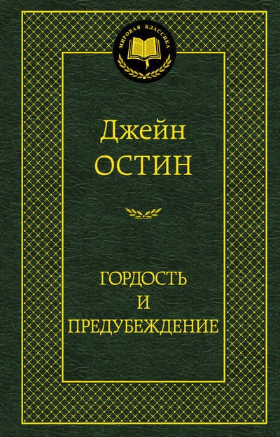
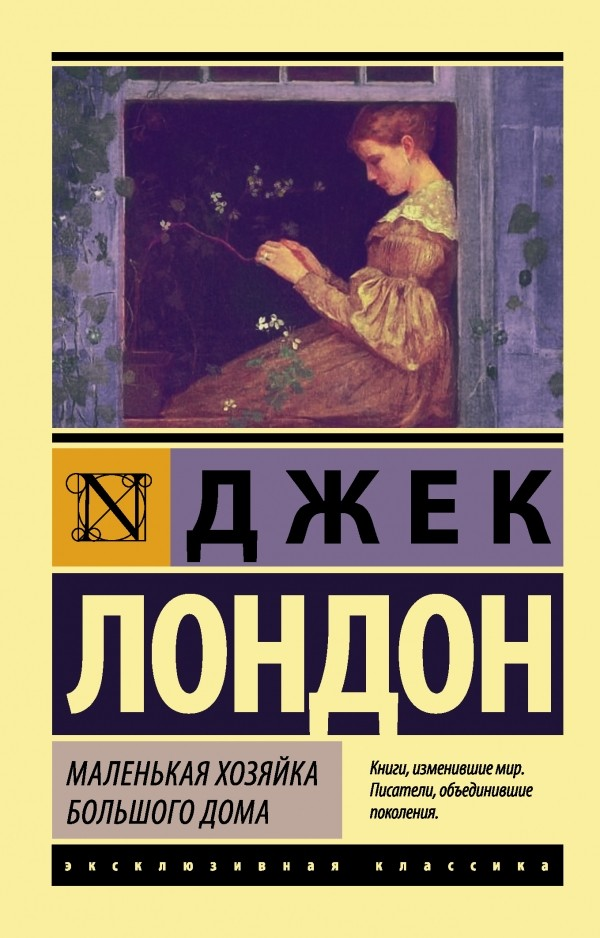

|  |
|
 |
Краткое описание |
Краткое описание |
Краткое описание |
|
Наиболее совершенным из всего, что создано Джейн
Остин, считается роман «Гордость и предубеждение»,
до сих пор не утративший ни капли своего неподражаемого
очарования и блеска.
|
Роман, о котором сам автор говорил: «„Маленькая хозяйка“ — это
то, к чему я стремился всю свою писательскую жизнь, ведь эта
книга так непохожа на то, что я создавал прежде».
Одна из самых романтичных и пронзительных историй
о любви в американской литературе, которую и сейчас
невозможно читать, не сопереживая героям.
Классический любовный треугольник — обаятельный
бизнесмен Дик Форрест, его вернувшийся из странствий
друг Ивэн Грэхем и молодая жена Дика, миниатюрная красавица
Паола, страдающая из-за любви к ним обоим, — трогает до слез.
|
«Ваша жизнь наполнена страхами? Живете одним днем, не зная,
что будет завтра? Каждый день ощущаете себя лишним в обществе?
Федор Анич знает рецепт от Ваших страхов! Он уверен, что
даже в самой безнадёжной ситуации можно найти выход.
Автор мастерски склеивает разбитые судьбы и решает самые сложные
жизненные головоломки.»
|
| Заказать книгу |
Заказать книгу |
Заказать книгу |
|